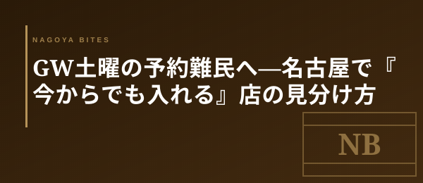

GW本番短信
GW土曜の予約難民へ — 名古屋で『今からでも入れる』店の見分け方
5/2土曜、GW後半の入口。予約サイトが軒並み『満席』表示でも、名古屋には『今からでも入れる店』がちゃんと残っている。業界人が当日突発で頼る、3つの見極め方を共有する。

この記事はNAGOYA BITES — 名古屋の厳選1,100店超を業界視点で紹介するグルメガイドの一部です。
5/2土曜の夜が今週いちばん厳しい理由
5/3〜5/5の3連休前夜にあたる土曜夜は、家族連れ・観光客・地元の外食組がまとめて重なる『最大需要日』だ。予約サイトの18時〜20時台は栄・名駅ともほぼ全滅、客単価6,000円以上のコース型店舗は2週間前から仕込まれている。『今夜どこかに入れればいい』という前提で動くのが、業界人の土曜流である。
① 17時開店ぴったり狙い — カウンター主体の業態
居酒屋・焼鳥・小料理屋・寿司のカウンター主体の店は、17時開店と同時に飛び込みでも一巡目の席が取れる確率が高い。理由は単純で、17時台に予約を入れる客は少なく、店側もこの時間帯は『入った客から座らせる運用』に切り替えているからだ。19時前に出れば次の予約客に席を渡せるので、店も歓迎する。逆に18時半以降の飛び込みは『次は何時の予約』を聞かれて断られる確率が跳ね上がる。
② 10席以下の店は19時台・21時台に瞬間的な空きが出る
カウンター8〜10席の小箱は、当日に2回転・3回転を前提にしていない。それでも19時台後半と21時前後に30分単位の瞬間的な空席が出る。この『隙間』を電話一本で押さえる動きは業界人の常套手段で、客側も覚えておくと使える。電話が繋がりにくい時間帯は店主が忙しい証拠なので、20時半過ぎに掛け直すと取れることがある。
③ 地下鉄2駅圏外の住宅街業態は依然として穴場
覚王山・池下・新栄・吹上・桜山・本山。名古屋駅から地下鉄で2駅以上離れた住宅街エリアは、観光客の射程外。GWでも普段の土曜と需要曲線が大きくは変わらない。地元客比率が高いので、5/2土曜・5/3日曜は『普段使いの店主たちが帰省で抜けた分、むしろ取りやすい』という逆転現象すら起きる。
予約なしで確実に成立するジャンル
ラーメン・町中華・大衆酒場・喫茶のモーニング——この4ジャンルは、GW中も基本的に予約不可・飛び込み運用だ。名古屋の場合、栄〜伏見の老舗町中華と、大須・千種の大衆酒場は土曜夜でも回転が早い。『きちんとした夜』に振り切るより、『美味い飯と冷えたビール』に降りる発想の切り替えが、連休中は効く。
予約困難店が満席でも、名古屋メシの選択肢は十分残っている。連休中の『今夜どこ行く』は、見極め方さえ知っていれば慌てる必要はない。
Inside Perspective — 業界人の目利き
- 17時開店ぴったり狙い — カウンター主体の店は一巡目の席が飛び込みでも取れる
- 10席以下の小箱は19時台後半・21時前後に瞬間的な空席が出る
- 地下鉄2駅圏外の住宅街エリアは観光客の射程外、GWでも需要曲線が変わらない
- ラーメン・町中華・大衆酒場・喫茶のモーニングは予約不要で確実に成立する